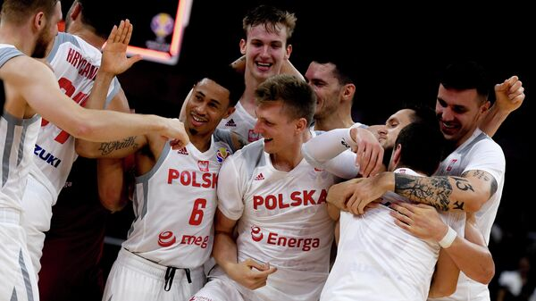

Koszykówka w Polsce
Polska koszykówka , zarówno męska, jak i kobieca, nie jest prekursorem w europejskiej koszykarskiej rodzinie. Jest to raczej silny średni wieśniak, zdolny do okresowego przynoszenia miłych niespodzianek swoim fanom. Do takich niespodzianek niewątpliwie można zaliczyć zwycięstwo kobiecej reprezentacji Polski w domowych mistrzostwach kontynentu w 1999 roku.

Skromniejszy jest dorobek połowy męskiej – czterokrotni (srebrni i trzy brązowi) zdobywcy mistrzostw Europy, ale ostatnie sukcesy sięgają końca lat 60. ubiegłego wieku. Aby podnieść poziom męskiej reprezentacji, podobnie jak większość europejskich drużyn, Polacy nie zapomnieli o przyciągnięciu pod swoje flagi Amerykanina. Od 2010 roku w biało-czerwonych barwach (głównych barwach reprezentacji) gra Amerykanin Thomas Kelati, który grał w mistrzostwach Polski i ożenił się z Polką.
Mistrzostwa Kobiet ( Polska Liga Koszykówki Kobiet ) składa się z 11 klubów. Zawody odbywają się od 1928 roku, z sześcioletnią przerwą spowodowaną II wojną światową. Na obecnym etapie dobrze znana jest krakowska Wisła i SSS Polkowice.
Inwestycje w koszykówkę kobiet są stosunkowo niewielkie. Dlatego polskie kluby kobiece mogą sobie pozwolić na zaproszenie legionistek z europejskiego poziomu, podnosząc tym samym poziom krajowych rozgrywek i konkurencyjność polskiej koszykówki w europejskich pucharach.
Mistrzostwa Polski w koszykówce mężczyzn ( Tauron Basket Liga ), a także mistrzostwa kobiet odbywają się od 1928 roku. Najwyższa liga składa się z 12 klubów. Niezmiennym mistrzem ostatnich 9 mistrzostw jest "Prokom" z Gdyni. Kluby inwestują w rozbudowę infrastruktury (budują się nowoczesne areny), przyciągając w ten sposób kibiców na stadiony. W związku z tym rośnie również zainteresowanie prasy i telewizji. Kluby ze sponsorami aktywnie działają, pozyskując dodatkowe środki do budżetu.
Polskie kluby nie odnoszą znaczących sukcesów w europejskich pucharach. Mimo to męski Prokom i damska Wisła są stałymi uczestnikami Euroligi, najbardziej prestiżowego europejskiego turnieju klubowego.
Najbardziej znanymi polskimi zawodnikami grającymi m.in. w National Basketball Association (NBA) są Maciej Lampe i Martin Hortat. Tragiczny był los wielkiego polskiego koszykarza Małgorzaty Dydka. Rekordzistka NBA (WNBA) kobiet pod względem liczby zablokowanych strzałów zapadła w śpiączkę i zmarła nie odzyskawszy przytomności.
Reprezentacja Polski w koszykówce mężczyzn
Reprezentacja Polski w koszykówce mężczyzn to reprezentacja Polski reprezentująca swój kraj na Mistrzostwach Europy i Świata. Wystąpiła 28 razy na mistrzostwach Europy i tylko raz na mistrzostwach świata, swoje medale zdobywała głównie w latach 60. (dwa brązowe i jeden srebrny). W 1997 wypadła z najwyższej ligi europejskiej, ale wróciła tam w 2007. Zgromadzeni pod przewodnictwem Polskiego Związku Koszykówki.
